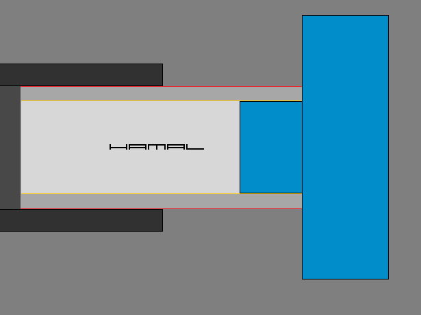
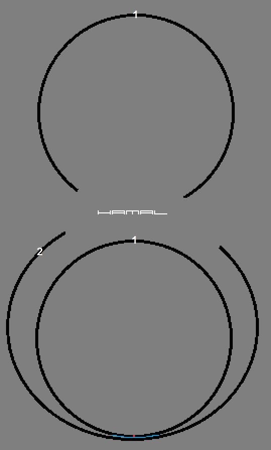
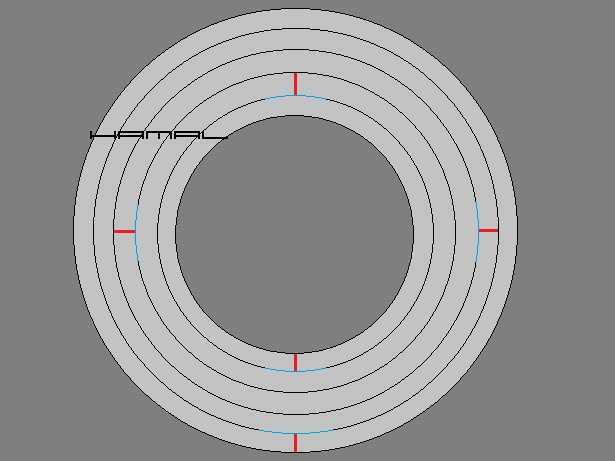
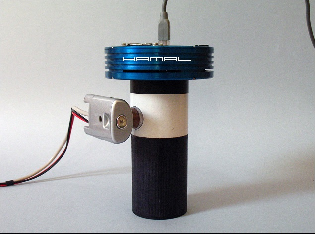
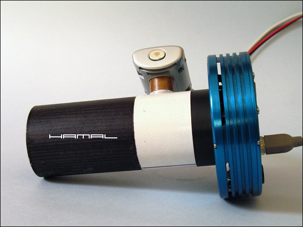
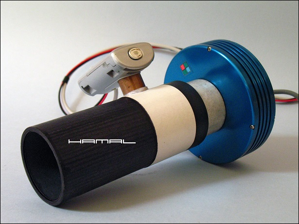
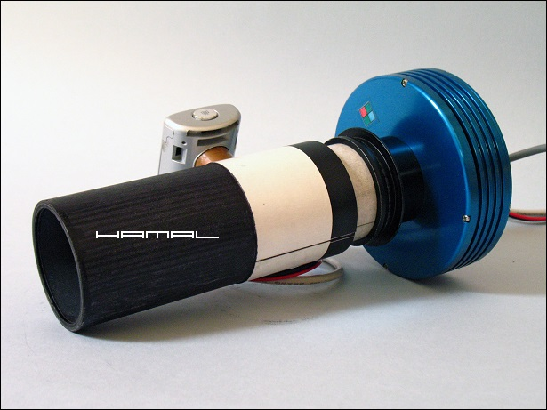
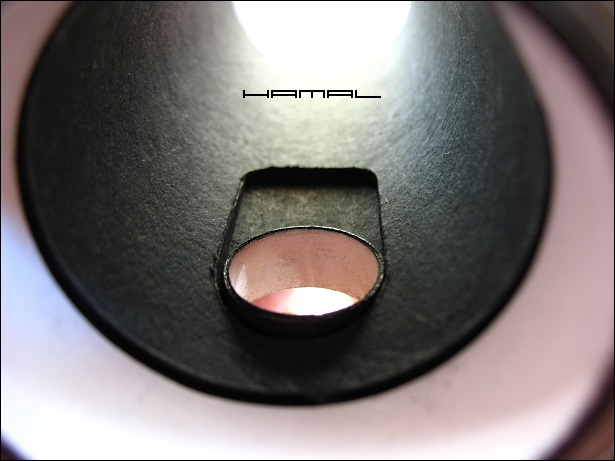

.
Samodzielna budowa OAG-a
|
Carton = Karton - nie mylić z Carbon ;) Fabryczny OAG, 2-3 pierścienie i kilka pokrętełek, kosztuje kilkaset złotych, nadto, wielokrotnie pojawiają się opinie o niedostatecznej sztywności tych urządzeń, mając więc powyższe na względzie, postanowiłem takowy samodzielnie sobie wykonać. A że ja nie lubię powielać wzorców, to zamiast latać i szukać tokarza który mi wykona pierścienie na wzór tych jakie można kupić, podszedłem do tematu niezależnie z użyciem techniki którą dawno temu opracowałem do innych celów, ale i w tym przypadku doskonale się sprawdziła. Na początku każdy może się wzdrygnie, jednak wiedzieć musi, że urządzenia te, mam dwa od kilku już lat, służą mi wiernie i były niezbędnym wyposażeniem zestawu który wykonał wiele zdjęć znajdujących się na stronie. Samodzielne wykonanie OAG-a OPIS MARERIAŁU Potrzebna będzie nam tektura/karton grubości 0,5mm, grubsza pomarszczy się przy zwijaniu, cieńsza, niepotrzebnie zwiększy ilość warstw. Tektura z jednej strony powinna być glazurowana na gładko, a z drugiej strony szara matowa (taką bardzo dobrze się klei super glue, gdyż klej ładnie się rozprowadza po gładkiej stronie a po zetknięciu z matową ładnie w nią wsiąka mocno usztywniając. Blok techniczny do tego celu nie nadaje się kompletnie. Do klejenia używamy tylko wyłącznie klejów błyskawicznych typu Super Glue, czy Kropelka. OPROJEKT Mamy do spełnienia konkretną potrzebę, w tym przypadku, umocowania kamerki w wyciągu okularowym, co już odgórnie narzuca nam pewnie wymiary urządzenia. 1. wymiar zewnętrzny (linia czerwona rys.) Jeśli obwód zewnętrzny będzie za mały, to wszystko będzie latało w wyciągu, jeśli będzie za duży, to urządzenie nie wejdzie nam do środka. 2. wymiar wewnętrzny (linia żółta rys.) jeśli będzie za mały nie wejdzie nam do środka nos kamerki, jeśli będzie za duży będzie luźno nam latała w środku. W tego typu rozwiązaniu nie robi się gwintów ani pierścieni do zaciśnięcia, wszystko musi w coś się wsuwać, na coś nasuwać i to najlepiej jak najgłębiej aby się dobrze trzymało, jednak wymagana jest tu precyzja w obwodzie pierścieni rzędu dziesiątych części milimetra. One nie mogą wchodzić do wyciągu lub na nos kamerki ani za ciasno ani za lekko, najlepiej z pewnym oporem.  KLEJENIE Klejenie najlepiej zacząć od środka doklejając od góry kolejne pierścienie, choć nie wykluczone jest klejenie i w drugą stronę będzie jednak ono wymagać dokładniejszego pasowania pierścieni. Po wycięciu prostokąta zaokrąglamy go bardzo umiejętnie na lekko zaoblonym kancie drewnianego mebla do uzyskania koniecznego zwinięcia. Nie czynimy tego zbyt mocno, aby nie uszkodzić/rozwarstwić kartonu. Pierwszy pierścień kleimy od razu do drugiego (patrz rys. poniżej) potem drugi zamykamy na górze na nim. Jeżeli ten pierwszy pierścień nam nie wyjdzie (zanim zamkniemy do drugim) można od razu go wyrzucić i robić nowy gdyż szkoda naszego nakładu pracy jeśli potem mamy walczyć z wypadającą lub za ciasną kamerką. Nie może być on też zbyt dopasowany, gdyż z doświadczenia wiem, że kiedy dołożycie kolejne pierścienie zaciśnie się on nieznacznie co sprawi że kamerkę będzie trzeba wbijać młotkiem a ma wchodzić lekko.  Klejenia dokonujemy jedynie w miejscach łącznia pierścieni (niebieskie oznaczenie) Czerwone oznaczenie to sugerowane przemienne łączenie kolejnych pierścieni, tylko 1 i 2 wykonujemy przeciwlegle.  Budujemy tak, aż do momentu kiedy zewnętrzną średnicą zbliżymy się do tej której oczekujemy. Wtedy należy zachować maksymalną czujność bo może się okazać, że średnica obecna jest za mała a po dodaniu kolejnego pierścienia będzie za duża, dlatego już wcześniej należało w tym jednym konkretnym przypadku zastosować jeden pierścień z innej grubości papieru. Bywa, że konieczne jest wklejenie jednej warstwy zwykłej kartki od drukarki a innym razem dwóch warstw, należy tak kombinować aby ostatni pierścień był z naszego kartonu 0,5mm glazurą na zewnątrz. Na sam koniec w brzegi takich tulei tam gdzie widać warstwy kartonu wlewamy klej, tak długo jak długo będzie wsiąkać. Niech karton napije się ile chce a dzięki temu po wyschnięciu za kilka godzin (bo tyle będzie do ostatecznego wyschnięcia nasza tuleja potrzebować) uzyskamy bardzo sztywne brzegi niejednokrotnie dorównujące twardością plastikowym. EFEKT Poniżej prezentuje zdjęcia gotowego urządzenia w różnej konfiguracji (wersja druga) a że ja ciągle pracuje na różnych ogniskowych, to z Barlow-em to z projekcją okularową, musze mieć uniwersalne narzędzie pozwalające mi ustawiać kamerkę w dowolnej odległości od wyciągu, dlatego wykonałem sobie model rozsuwany. Ten OAG pozwolił mi się nie martwić o tulejki, przedłużki i inne pierdółki.       I to chyba tyle porad, nie sposobna wszystkiego dokładnie opisać, mnie prowadzi 20 lat doświadczenia modelarskiego. W cięciu kartonu i posługiwaniu się szybkim klejem trzeba mieć pewne doświadczenie, tego nikogo tu nie nuczę. Ja kiedy potrzebuje połączyć jakieś elementy np. okular z aparatem nie szukam po sklepach złączek za 50 zł tylko zwijam, odpowiednią tulejkę i gotowe. Oczywiście nie sposobna zastąpić nimi niektóre specjalizowane elementy, jednak czasem można zaoszczędzić czas i pieniądze, bo nie rzadko na przesyłkę czekamy dniami, aby na koniec się okazało ze pomysł jaki mieliśmy nie wypalił i nie będzie ona nam zupełnie potrzebna. Zamiarem powyższego opisu było zasygnalizowanie rozwiązania które jest możliwe a nigdzie do dziś nie było propagowane. 
|